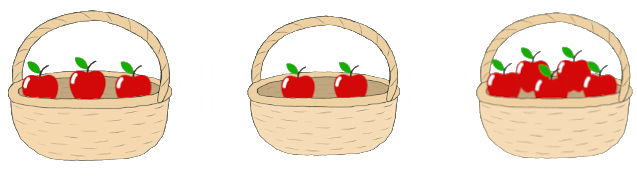
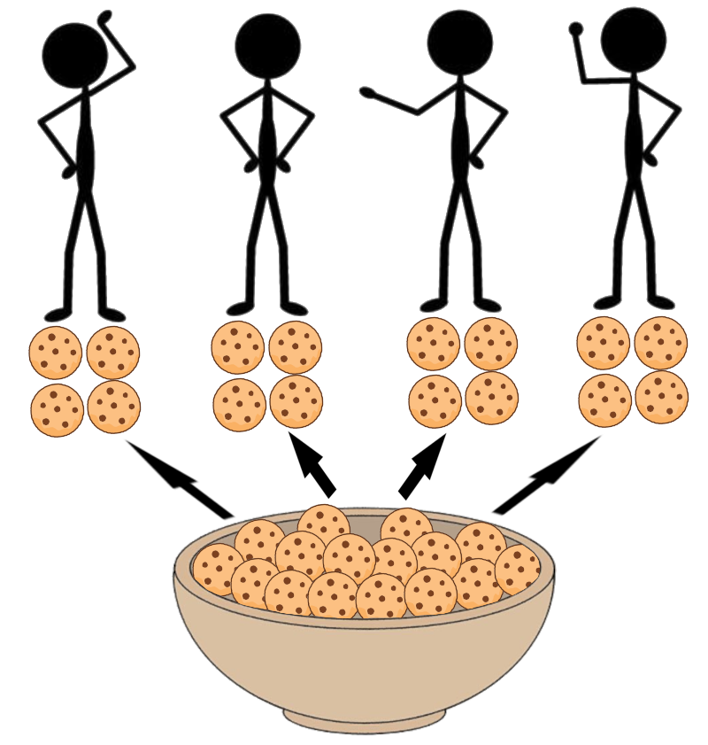

David Knuth, born 1938, inventor of up-arrow notation. Picture from 2011.

Addition represented by apples in baskets.
There are 4 basic arithmetic operations which are very closely related and fundamental to all of mathematics.
These are addition (\(+\)), subtraction (\(-\)), multiplication (\(\cdot\) or \(\times\)) and division (\(\div\)).
Addition is equivalent to counting two different things and adding them together.
For example, if you have a basket of three apples and one of two apples,
adding the amount of apples together is equivalent to dumping all of these apples into one basket and counting how many apples there are in total.
Written mathematically: 3 + 2 = 5, where "=" denotes equality between both sides of the equals sign. If two things are not equal you can denote it using the unequal sign: "\(\neq\)".
Subtraction is the opposite of this, where you start with an amount and remove a certain amount from it and then count how much is left.
For example, if you have a basket of five apples, and you eat two of them, then subtraction is equivalent to counting how many apples are left in the basket.
Written mathematically: 5 - 2 = 3.
Since subtraction "undoes" the effects of addition, we say it is the inverse operation to addition.

Division represented by sharing cookies with friends.
Moving on, multiplication is just repeated addition.
So if we have five baskets with each basket having four apples in them, we can figure out the amount of apples by adding the amount of apples in each basket together.
The amount of apples is 4 + 4 + 4 + 4 + 4 = 20.
However, writing this sum is very long and tedious, we shorten it by writing 4\(\cdot\)5 = 20 or 4\(\times\)5 = 20.
Just how subtraction is the inverse to addition, division is the inverse to multiplication.
You can think about division as trying to share an amount of objects equally among an amount of things.
Like trying to share an amount cookies among your friends so that everyone gets the same amount of sweet treats.
For example, say you have 16 cookies and three friends. You want all three of your friends and you to get the same amount of cookies.
Mathematically, 16 \(\div\) 4 = 4 or 16 : 4 = 4.
Note that division by 0 is impossible, because it has no meaning, as in sharing something equally among 0 people doesn't make any sense.
Furthermore, every number multiplied with 0 equals 0, therefore an equation such as "\(5 \div 0\)" doesn't make any sense,
because there is no number which when multiplied with zero returns 5.
You have three bowls of fruit. One bowl has 3 fruit, the next 2 and the last 5. How many fruit are there in total?
Solution: \(3 + 2 + 5 = 5 + 5 = 10\)
A bank had 73 bars of gold. 47 of them were stolen. How many gold bars does the bank have left?
Solution: \(73 - 47 = 26\)
You earn 20 Euros per hour of work. How much do you make after 8 hours of work?
Solution: \(20 \cdot 8 = 160\)
You class of 23 students organizes a school trip which costs a total of 276 Euros and every student should pay the same amount.
How much should each student pay?
Solution: \(276 \div 23 = 12\)
Every number in a calculation of the 4 operations has a name, which is quite useful to communicate calculations more efficiently, instead of saying "the number left of the division sign".
Say you have an addition: 1 + 2 = 3, the order of the numbers in the addition doesn't matter, so every number next to a plus sign is called an addend (1, 2) and the outcome of an addition is called the sum (3).
Same setup, however with subtraction order does matter: 1 - 2 = -1, the number being subtracted from is called the minuend (1), the number being subtracted is called the subtrahend (2) and the outcome is called the difference (-1).
Order does not matter, so for any multiplication like: \(2 \cdot 2 = 4\), the numbers being multiplied are called the factors (2, 2), and the outcome is the product (4).
Lastly, for a division, for example: \(4 \div 2 = 2\) the number being divided is called the dividend (4),
while the number that you divide by is called the divisor (2). The outcome of a division is called the quotient (2).
If a number isn't divisible by another number, it can be written as a division with a remainder, for example: \(9 \div 4 = 2, Remainder:1\).
You can methodically calculate every operation by hand easily and accurately. These are necessary for large numbers or operations that are too difficult to compute in your head.
Addition is very easy, even for large numbers or decimals.
You calculate them by adding each digit of both numbers together and if they exceed 10 you just move the 1 over and add it to the next digit.
Example: 723.53 + 78.923 + 423.7
You start by writing all the numbers below each other with each digit being lined up with the other. Like such:
\[
\begin{array}{r}
723.53 \phantom{0} \\
\phantom{0}\phantom{0}\phantom{0} 78.923 \\
+423.7 \phantom{0}\phantom{0} \\
\hline
\end{array}
\]
If you'd like you can also replace the empty spaces with zeros.
\begin{array}{r}
723.530 \\
\phantom{0}\phantom{0} 078.923 \\
+423.700 \\
\hline
\end{array}
Now you just work your way from top to bottom, adding each digit in each column and writing it at the bottom.
If you exceed 10 you just write the ones digit and add the tens digit to the next column.
Doing that properly should lend you the correct result, that is:
\[
\begin{array}{r}
723.530 \\
\phantom{0}\phantom{0} 078.923 \\
+\cancelto{5}{4}\cancelto{3}{2}\cancelto{5}{3}.700 \\
\hline
\underline{\underline{1226.153}}
\end{array}
\]
Exercise: Compute 872.94 + 1238.17
The process of subtraction is very similar to addition. Say you have two numbers: 782.53 - 493.21. You start by writing them just as with addition. However, whereas with addition the order of the numbers doesn't matter, here it very much does. \[ \begin{array}{r} 782.53 \\ -493.21\\ \hline \end{array} \] The idea of subtracting like this is to find the number which, when added to the subtrahend, adds up to the minuend. In this case you're going to work your way up with each column. In our case we start by finding which number added to one sums up to three. When, in order to reach the sum you have to cross the tens digit, you write the remainder at the bottom and add the tens digit to the minuend. In the third column from the right you exceed 10, so you increment the next digit in the subtrahend by 1, so the 9 turns to a 0, and you once again increment the left digit, 4 \(\to\) 5. \[ \begin{array}{r} 782.53 \\ -\cancelto{5}{4}\cancelto{0}{9}3.21\\ \hline \underline{\underline{289.32}} \end{array} \] Exercise: Compute 972.81 - 1251.92
With multiplication the motivation is to separate each digit into its own multiplication and the sum up the products. For example: \(1234 \cdot 5678\) You start by writing the numbers next to each other with a line below them. \[ \begin{array}{r} 1234\cdot5678 \\ \hline \end{array} \] Then you go through each digit on the right and multiply it with the whole number of the left. The sum of all of those products will give you the whole product. Make sure to write each minor product one digit offset per digit, because, for example, when you're computing the 1234 \(\cdot\) 7, it's not actually 7 but 70. When your multiplication exceeds 10 you write down the ones digit and carry the 10s digit. \[ \begin{array}{r} 1234\cdot5678 \\ \hline 9872\:\:\:\:\:\:\:\:\:\:\:\: \\ 8638\:\:\:\:\:\:\:\:\:\:\:\:\:\: \\ 7404\:\:\:\:\:\:\:\:\:\:\:\:\:\:\:\: \\ 6170\:\:\:\:\:\:\:\:\:\:\:\:\:\:\:\:\:\: \\ \hline \end{array} \] After you multiplied the factor on the left with each digit you can sum up all the products to arrive at the final product. If it helps you, you can fill in the empty spaces with zeroes. \[ \begin{array}{r} 1234\cdot5678 \\ \hline 0009872\:\:\:\:\:\:\:\:\:\:\:\: \\ 0086380\:\:\:\:\:\:\:\:\:\:\:\: \\ 0740400\:\:\:\:\:\:\:\:\:\:\:\: \\ 6170000\:\:\:\:\:\:\:\:\:\:\:\: \\ \hline \underline{\underline{7006652}}\:\:\:\:\:\:\:\:\:\:\:\: \end{array} \] Exercise: Calculate 1928 \(\cdot\) 3746
Here, the motivation is to find the number which, when multiplied with the divisor, multiplies out to the dividend.
Let's divide 375 by 18. We start by writing the numbers next to each other with a line below them.
\[
\begin{array}{r}
375:18= \\
\hline
\end{array}
\]
Then we check how many numbers we need to consider so that the divisor fits into the dividend. In our case, 18 doesn't fit in three, however it does fit in 37, so mark that somehow.
\[
\begin{array}{r}
37^{\urcorner}5:18= \\
\hline
\end{array}
\]
Now you will write down how many times 18 fits into 37 right of the equals sign and subtract that from the divisor as follows.
Afterwards you bring down one digit from the divisor and continue this process. If you cross the tenths digit you add a comma on the right as well.
If you are doing division with very large numbers making a multiplication table up to 10 can be quite helpful.
\(
\begin{array}{r}
37^{\urcorner}5:18=2 \\
\hline
-36\downarrow\:\:\:\:\:\:\:\:\:\:\:\:\:\:\:\:\: \\
\hline
1\:5\:\:\:\:\:\:\:\:\:\:\:\:\:\:\:\:\:
\end{array}
\)
\(
\begin{array}{c|c}
1 & 18 \\
\hline
2 & 36 \\
3 & 54 \\
4 & 72 \\
5 & 90 \\
6 & 108 \\
7 & 126\\
8 & 144 \\
9 & 162 \\
10 & 180 \\
\end{array}
\)
Then just continue this process until either your remainder is zero or your remainder is the same as it was once previously.
If this is the case than the decimals repeat, so you denote that with a dot above the number or line above the numbers.
If the divisor doesn't fit into the number you just write down a zero and bring down the next digit. If there is no next digit you just bring down a zero.
\[
\begin{array}{r}
37^{\urcorner}5:18=20.8\dot{3} \\
\hline
-36\:\:\:\:\:\:\:\:\:\:\:\:\:\:\:\:\:\:\:\:\:\:\:\:\:\:\:\:\: \\
\hline
1\:\:50\:\:\:\:\:\:\:\:\:\:\:\:\:\:\:\:\:\:\:\:\:\: \\
-144\:\:\:\:\:\:\:\:\:\:\:\:\:\:\:\:\:\:\:\:\:\: \\
\hline
\underline{6}0\:\:\:\:\:\:\:\:\:\:\:\:\:\:\:\:\:\:\: \\
-54\:\:\:\:\:\:\:\:\:\:\:\:\:\:\:\:\:\:\: \\
\hline
\underline{6}\:\:\:\:\:\:\:\:\:\:\:\:\:\:\:\:\:\:\:
\end{array}
\]
Let's do an example where there is more than one repeating digit.
\[
\begin{array}{r}
1:7=0.\overline{142857} \\
\hline
10^\urcorner\:\:\:\:\:\:\:\:\:\:\:\:\:\:\:\:\:\:\:\:\:\:\:\:\: \\
\hline
-7\:\:\:\:\:\:\:\:\:\:\:\:\:\:\:\:\:\:\:\:\:\:\:\:\:\:\: \\
\hline
\underline{3}0\:\:\:\:\:\:\:\:\:\:\:\:\:\:\:\:\:\:\:\:\:\:\:\:\: \\
-28\:\:\:\:\:\:\:\:\:\:\:\:\:\:\:\:\:\:\:\:\:\:\:\:\: \\
\hline
20\:\:\:\:\:\:\:\:\:\:\:\:\:\:\:\:\:\:\:\:\:\:\: \\
-14\:\:\:\:\:\:\:\:\:\:\:\:\:\:\:\:\:\:\:\:\:\:\: \\
\hline
60\:\:\:\:\:\:\:\:\:\:\:\:\:\:\:\:\:\:\:\: \\
-56\:\:\:\:\:\:\:\:\:\:\:\:\:\:\:\:\:\:\:\: \\
\hline
40\:\:\:\:\:\:\:\:\:\:\:\:\:\:\:\:\:\: \\
-35\:\:\:\:\:\:\:\:\:\:\:\:\:\:\:\:\:\: \\
\hline
50\:\:\:\:\:\:\:\:\:\:\:\:\:\:\:\: \\
-47\:\:\:\:\:\:\:\:\:\:\:\:\:\:\:\: \\
\hline
\underline{3}\:\:\:\:\:\:\:\:\:\:\:\:\:\:\:\:
\end{array}
\]
Once you get used to this you can shorten the writing by omitting the subtraction and just writing the difference below immediately. Example:
\[
\begin{array}{r}
40^{\urcorner}2.5:23=17.5 \\
\hline
\:
172\:\:\:\:\:\:\:\:\:\:\:\:\:\:\:\:\:\:\:\:\:\:\:\:\:\: \\
115\:\:\:\:\:\:\:\:\:\:\:\:\:\:\:\:\:\:\:\:\:\: \\
\underline0\:\:\:\:\:\:\:\:\:\:\:\:\:\:\:\:\:\:\:\:\:\:
\end{array}
\]
Exercise: Calculate 209.865 / 17
As you can tell, sometimes these divisions result in very unpleasant numbers which are hard to work with.
Because of that, we often just write the division itself without actually calculating it. This is called a fraction.
Instead of writing the dividend and divisor next to each other, we draw them below each other separated by a division bar.
When working with fractions, the dividend, the number at the top, is called the numerator, whilst the number at the bottom is called the
denominator.
Example: Write \(837 \div 153\) as a fraction:
Solution: \(\frac{837}{153}\)
\( \begin{array}{l} 1.)\: 137 & 6.)\: 35 & 11.)\: 300 & 16.)\: 112\\ 2.)\: 200 & 7.)\: 82 & 12.)\: 701 & 17.)\: 303\\ 3.)\: 999 & 8.)\: 164 & 13.)\: 97047 & 18.)\: 9.801\\ 4.)\: 4696 & 9.)\: 1388 & 14.)\: 0.9999999504 \: (\text{1 is fine too}) & 19.)\: 4\\ 5.)\: 1580 & 10.)\: -627 & 15.)\: 720 & 20.)\: 2.75 \end{array} \)
There is no high level definition of addition or the basic arithmetic operations, however you can define them and many more operations recursively using the successor function.
The successor function, denoted S(n), gives you the next number after n. S(0) = 1, S(1) = 2, ...
You can define addition using only two axioms:
\[
a + 0 = a \\
a + S(b) = S(a+b)
\]
For example, to compute 7+3 we just use these axioms repeatedly.
\[
7 + 3 = \\
7 + S(2) = \\
7 + S(S(1)) = \\
7 + S(S(S(0))) = \\
S(S(S(7 + 0))) = \\
S(S(S(7))) = S(S(8)) = S(9) = 10 \:\:\blacksquare
\]
For exponentiation, this process is too bulky and superfluous to do for large exponents, however rest assured this works for all operations no matter how large.
Example:
\[
2^3 = 2 \cdot 2 \cdot 2 = (2+2)(2) = 2+2 + 2+2 = \\
2 + S(S(0)) + 2 + S(S(0) = S(S(2)) + S(S(2)) = \\
4 + S(S(S(S(0)))) = S(S(S(S(4))) = 8 \:\:\blacksquare
\]
Addition can be defined recursively using the successor function. Furthermore, multiplication is repeated addition, and exponentiation is repeated multiplication.
So does there exist an operation that is repeated exponentiation? And the repeated operation of that?
These are called Hyperoperators or Hyperoperations. The next hyperoperators after exponentiation are tetration, pentation, hexation, and so on.
Tetration is repeated exponentiation, for example, "two tetrated to four", sometimes written with a superscript left of the number is equal to:
\[
^{4}2 = 2^{2^{2^{2}}} = 2^{16} = 65536
\]
Tetration grows incredibly quickly, and every next hyperoperator grows even faster.
Knuth's up-arrow notation is one among many ways to notate hyperoperations.
One up-arrow (\(a \uparrow b\)) is equivalent to exponentiation (\(a^b\)).
Every up-arrow is "b" repeated operation of one less up-arrow.
David Knuth, born 1938, inventor of up-arrow notation. Picture from 2011.
Example 1: \[ 3 \uparrow\uparrow 4 = \\ 3 \uparrow (3 \uparrow (3 \uparrow 3)) = \\ 3 \uparrow (3 \uparrow 27) = \\ 3 \uparrow 7625597484987 = 3^{7625597484987} \]
Example 2: \[ 2 \uparrow\uparrow\uparrow 3 = \\ 2 \uparrow\uparrow (2 \uparrow\uparrow 2)) = \\ 2 \uparrow\uparrow (2 \uparrow 2) = \\ 2 \uparrow\uparrow (4) = \\ 2 \uparrow (2 \uparrow (2 \uparrow 2)) = 2 \uparrow\uparrow 16 = \underbrace{2^{2^{\cdot^{\cdot^{2}}}}}_{16\text{ copies of }2} \]
If you dislike drawing many up arrows you can also draw one with the superscript denoting how many arrows there are.
\[
2 \uparrow\uparrow\uparrow 3 \text{ would be written as: } 2 \uparrow^{3} 3
\]
Generally:
\[
a \underbrace{\uparrow\cdots\uparrow}_{n \text{ arrows}} b = a\uparrow^{n}b
\]
A little fun fact for the road:
Circulation is the hyperoperator defined as
\[
a \uparrow^{\infty} b = lim_{n \to \infty} a \uparrow^{n} b
\]
Properties of circulation:
\[
\forall n \\
1 \uparrow^{\infty} n = 1 \\
2 \uparrow^{\infty} 2 = 4 \\
n \uparrow^{\infty} 0 = 1 \text{ (as long as } n \neq 0) \\
n \uparrow^{\infty} 1 = n
\]
For all other equations using circulation it is undefined/infinite.
1.)
\[
-5+3=\\
-5+S(S(S(0)))=\\
S(S(S(-5+0)))=\\
S(S(S(-5)))=S(S(-4))=S(-3)=-2
\]
2.) \[(-1)\cdot4=\\
(-1)+(-1)+(-1)+(-1)=\\
\text{Note that: } S(-n) = S(0-n) = S(0)-n \:\text{ So:}\\
-1-1 + S(-2) + S(-2) =\\
-1-1+ S(0) - 2 + S(0) - 2 =\\
S(-1)+S(-1)-2-2=\\
0+0+S(0)-3-2=\\
S(-2)+S(0)-4=\\
-1+S(0)-4=\\
S(-1)-4=0-4=-4\]
3.)
\[
S(n) = n+1\\
a+S(b) = \\
a+(b+1) =\\
(a+b)+1= S(a+b)
\]
4.)
\[
5\uparrow\uparrow\uparrow2=\\
5\uparrow\uparrow5=\\
5\uparrow5\uparrow5\uparrow5\uparrow5=5^{5^{5^{5^5}}}
\]
5.)
\[
x \uparrow^2 2 = \frac{1}{2}\\
x\uparrow^22 = x^x = (1/2)\\
e^{lnx}lnx=ln(1/2)\\
lnxe^{lnx}=ln1/2 \:\:\:\text{ Use Lambert-W}\\
lnx = W(ln1/2))\\
x=e^{W(ln(1/2))}
\]